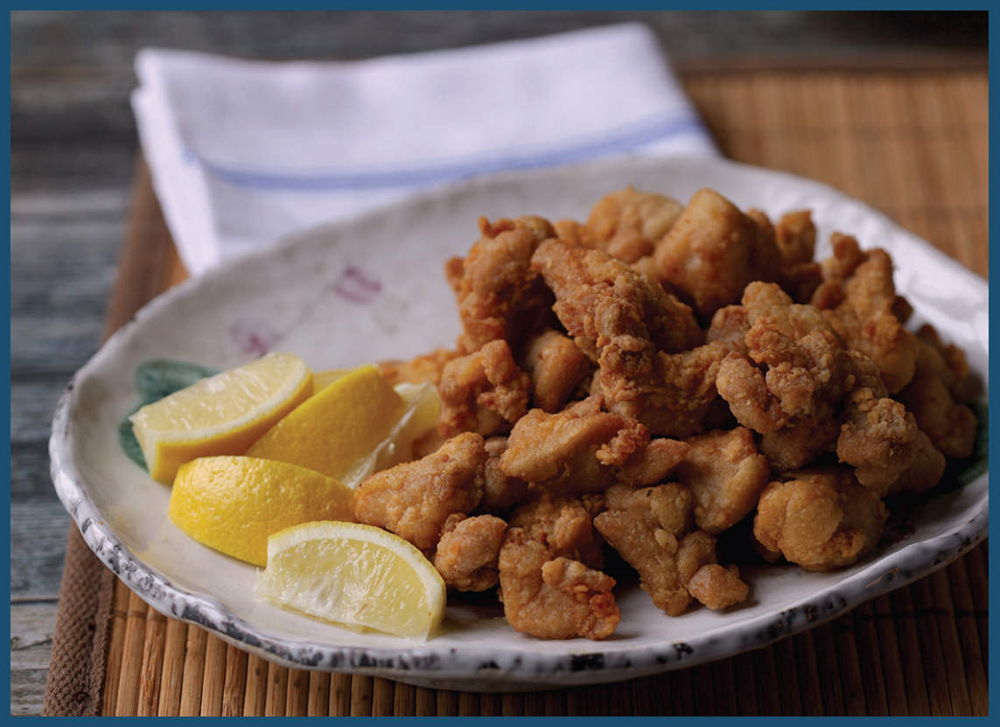

KARAAGE (JAPANESE-STYLE MARINATED FRIED CHICKEN)
The etymology of the word karaage (kah-ra-ah-geh) is not completely clear. The age part of it is the Japanese word for “frying.” That much is agreed upon. But the kara part could mean two different things depending on exactly how it’s spelled. It’s more commonly spelled with the character 唐, a reference to the Tang Dynasty in China, the origin of the style of frying. However, there is little to suggest that the dish karaage is actually Chinese in origin, so some newspapers and food writers use the character “空” instead, which translates as “empty.”
This latter makes sense. Typical methods of frying in Japan include a batter (as with tempura) or a bread crumb coating (as with katsu), but with karaage, bits of food are simply dusted in flour or starch before being fried. I asked my mom what karaage means to her. Her response was “not katsu and not tempura.”
You may have heard the term tatsutaage. Technically, tatsutaage involves marinating meat before dusting and frying it, while karaage involves no marinade, but these days the two terms are generally used interchangeably, and nobody would bat an eye if ordering karaage produced something with some soy and ginger flavor built right in with a marinade. Similarly, while karaage technically refers to any food cooked in that style (pork, octopus, and burdock are common choices), if there is no qualifier attached to it, chicken thigh is the default choice.
A basic karaage marinade contains ginger, sake, and soy sauce, though if you’d like, you can add any number of other flavors. Garlic and sesame oil are common choices, as is mirin, oyster sauce, or even Kewpie mayonnaise. My mom would marinate hers with soy sauce, sake, and ginger, then dust it in potato starch cut with Japanese curry powder before deep frying it.
The soy sauce is the real key to good karaage. It contains two factors that improve chicken: salt and protease enzymes. As muscle proteins heat up, they constrict, which squeezes juices out of meat, toughening it and making it dry out. The salt in marinades, brines, and dry rubs dissolves muscle proteins. This reduces their proclivity to constrict, which in turn leaves meat that’s been treated with salt juicier and more tender. Proteases are enzymes in soy sauce that behave in a similar manner, breaking down proteins and enhancing the effect of salt (powerful proteases are how papaya juice, pineapple juice, and commercial meat tenderizers tenderize meats).
As for the starch coating, karaage is never as crisp as, say, southern fried chicken. The thin layer of starch on it is less about creating a crunchy shell and more about protecting the outer layers of meat from desiccating or turning stringy. Still, double-frying the chicken—once at a low temp and then again at a higher temperature—will make it extra crisp (are you beginning to notice a theme here?)
